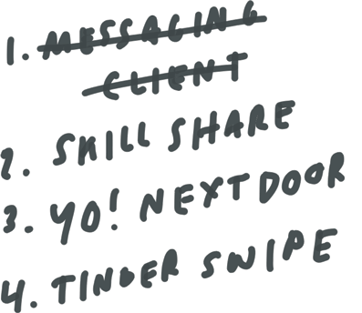
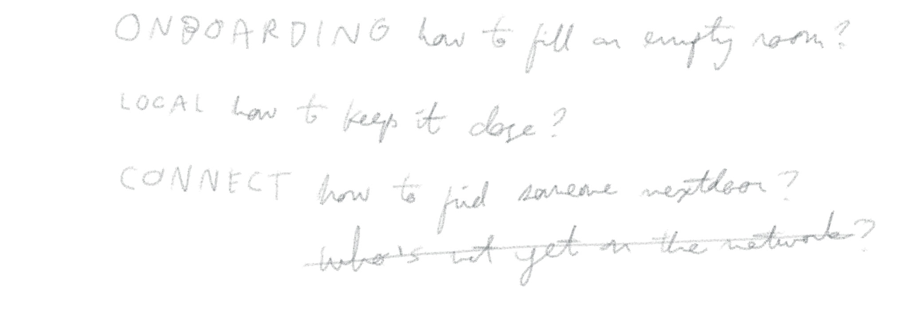
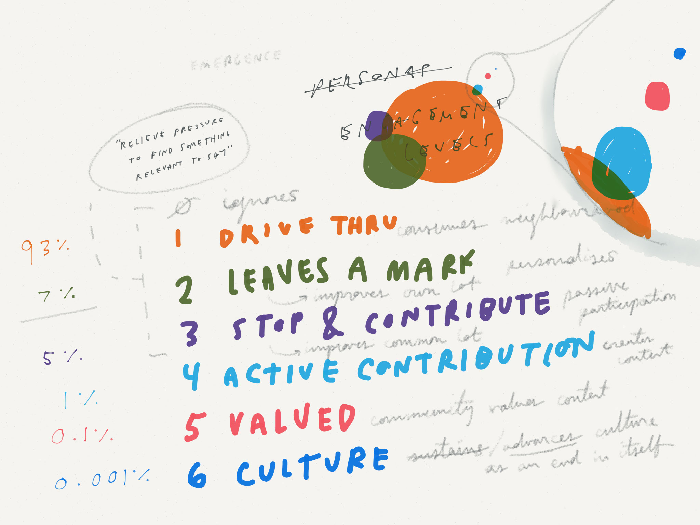
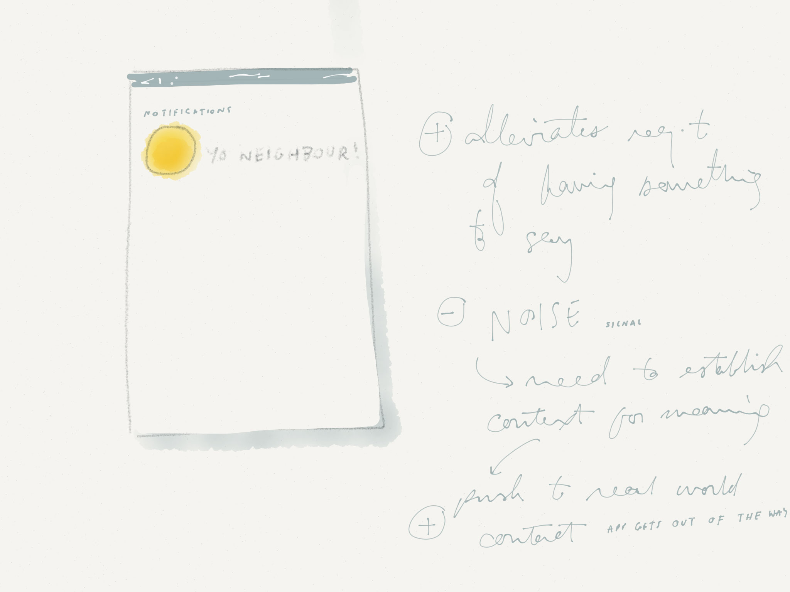
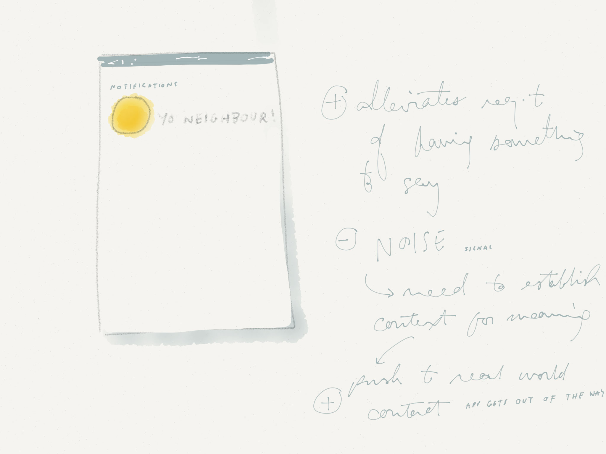
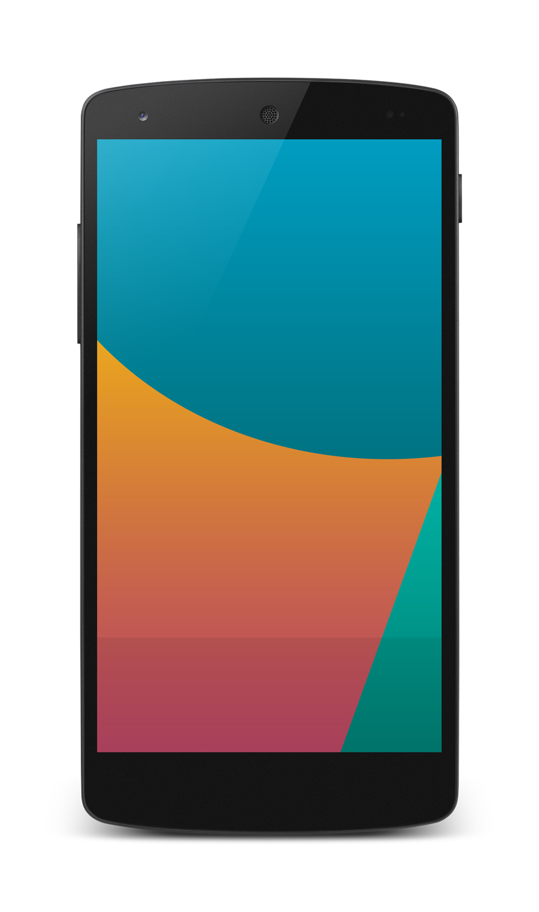

Contents
Including a low-fidelity overview of the product. Sketches, wireframes, and concept models are used in describing the solution.
A high-fidelity mockup for one interaction.
- Research
- Concept
- Prototype
- Summary
§1 Research
“Good fences make good neighbours”
But do they? I take this to be the central question of Frost’s poem. Is there a clue in how to approach design solution in light of this irony?
Take seriously the charge that apps, like fences, can be potential barriers to human connectedness. Look for a software solution that gets out of the way, ushers users back into their physical neighbourhood.
Initial design goal:
Build relationships with neighbour
This quick survey suggests the real win is in building respect for difference. Adopt a new design constraint to “build relationships” by confronting difference, not merely celebrating sameness.
Refined design goal:
Relieve the pressure to find something meaningful to say.
Favour real-world connectedness. Nurture debate, thought, and respect for conflicting interests of others — maybe offline.
This is roughly the upshot of my Educating the Community paper and this condensed scan through research. (Available as Appendix §1).
§2 Concept
Evaluate app propositions
1. A messaging client misses the force of the point: coming up with a message for new neighbour is too hard!
2. Skill sharing and tool swapping feel idealistic and quaint. Risky premise that ‘neighbours only as good as their tools’ or insofar as benefits me when aiming to build respect and tolerance for difference.
3. Yo! Neighbour “Knock Knock!” would be straightforward execution, but still sophisticated solution. Avoids risk of getting lost in complex features. Connects people without getting in the way. Plus a good chance to talk about Yo! which would be interesting. Chance I’d even knock out a prototype (Polymer or Keynote).
4. too much Tinder
Problems to solve
Engagement levels
Tailor experience for users at various levels of engagement with the product, and in community itself.
Emphasis on Level 1 experience. Aim for compelling product proposition for least engaged. Expect this to be largest user segment.
Yo! Neighbour: “Knock Knock!”
Delightfully simple. Pebble thrown at your window, or a knock at your door. People ascribe their own meanings to signals relevant to context, to a particular relationship.
If "yo" meant “knock knock”, would neighbours come together to build better relationships with each other?
 

Search for a neighbour by address
User journey “happy flow”
- Launches app. Taps + to find new neighbour.
- Opts to find by address.
- Button from 2. animates into input field. Virtual keyboard overlays.
- a. Match with existing user. Tap to “knock”.
b. Prompt to print flyer to drop through letterbox. Flyer promotes app available in Play, iOS, and Windows Phone Store. QR code with link to launch on device. - a. Confirmation state.
b. Rishi K receives notification. - Bluedoor returns to homescreen where Rishi K has been added.
Demonstrate Material Design “ripple” effect on touch.
Process: making use of platform UI toolkit and documentation.
Aim to make documentation for this exercise on par in sophistication to Material Design’s.
Menu drawer
Documentation goes here food truck seitan bitters, pork belly raw denim Portland PBR&B Intelligentsia Wes Anderson normcore pug fixie cliche banh mi XOXO. Post-ironic gastropub direct trade, you probably haven't heard of them Portland Pitchfork actually Truffaut VHS pop-up. Polaroid deep v dreamcatcher Schlitz, squid pug chambray readymade Brooklyn. YOLO Brooklyn Intelligentsia Tonx, dreamcatcher drinking vinegar distillery occupy forage gluten-free. Pickled Tumblr mlkshk shabby chic, crucifix American Apparel fashion axe readymade dreamcatcher. Mlkshk normcore flannel pickled, American Apparel mumblecore dreamcatcher. Keffiyeh gentrify synth occupy, authentic 8-bit yr tousled blog Portland.
§3 Prototype
Demonstrating sidebar menu transition.
Sidebar helps me stay in control. Contains user profile, editable inline.
Shows “ripple” on-tap behaviour. Plus persistent toolbar behaviour on user scroll.
Interactive prototype built using Polymer framework. (Click around on the phone at left!)
Runs native in browser and on device browser for clickable prototype.
*Not yet mastered many of Polymer’s interaction components. But stretch goal here would be to add after more investigation.